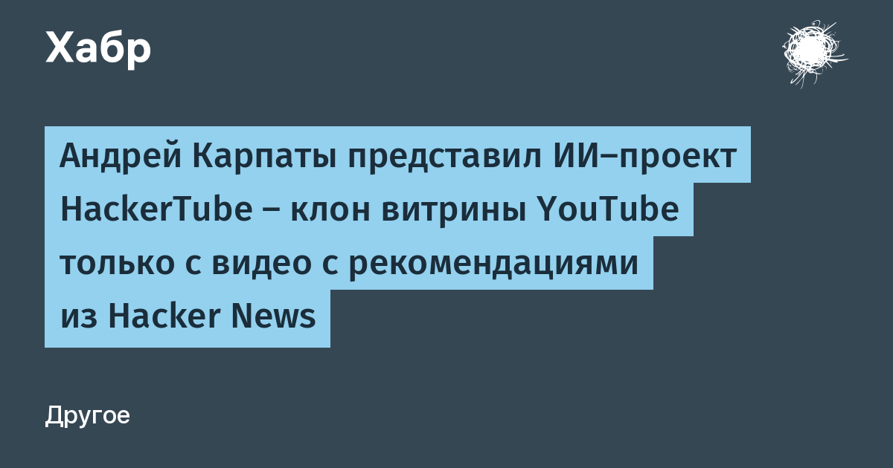

Пятница, одиннадцать вечера. Андрей Карпаты — сооснователь OpenAI, бывший глава автопилота Tesla — заходит на YouTube «что-нибудь посмотреть» и, по его собственным словам, видит «стену деградировавшего мусора»: кричащие превью, recommendations по кругу, контент «уровня фильма „Идиократия“». Утром он открывает Claude Code с моделью Opus 5.5 и ставит задачу: написать собственный клон YouTube, основанный на том, что люди реально советовали в комментариях Hacker News. Клон получился — hackertube.org.
Агент скачал все комментарии Hacker News, прогнал их через модель Sonnet в рамках рабочего процесса Claude Code, отфильтровал спам и low-grade контент. Осталось 40 тысяч комментариев, в которых упоминались ссылки на YouTube-ролики. Итог — 6 454 видео, рекомендованных пользователями HN в период с 2007 по 2026 год, разложенных по 150 темам.
HackerTube берёт миниатюру не ту, что залил автор, а кадр из середины видео (50% плеча) — без кликбейта по определению. Персональные рекомендации «Для вас» работают без всякой регистрации: состояние живёт в локальной сессии браузера. Есть клавиатурные сокращения, а данные сайта можно выгрузить одним файлом — Карпаты прямо предлагает передать их своему агенту и собрать личную версию платформы.
Самое примечательное — не сервис, а трудозатраты: по словам Карпатого, на проект ушло около двух часов. Его единственная «ручная» работа — создать API-ключ Google Cloud для метаданных YouTube да запустить VPS-сервер; остальное он «просто разговаривал с Claude». В блоге он подписывается: «Наконец-то можно вздохнуть спокойно. Спасибо, Opus 5.5 <3». От исходных роликов HackerTube, впрочем, не отказывается: видео по-прежнему живут на YouTube, проект меняет только фильтр, через который зритель попадает к контенту.